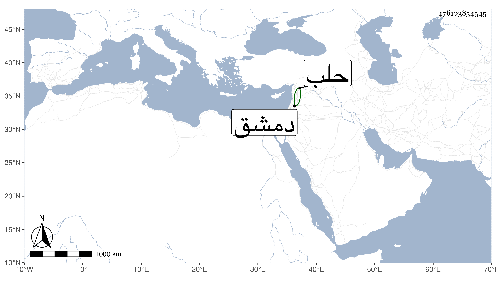

0902Sakhawi.DawLamic.ITO20230111-ara1.EIS1600.476103854545
Biography ID: 476103854545
147
تغرى ورمش بن أحمد واسمه حسين وكان أبوه يدعى بابن المصري ، من بهستا أحد أجنادها قبل الفتنة التمرية ، وكان له ملك بها فخربت أملاكه في الفتنة وافتقر وتحول بأولاده كهذا فخدم بعض الامراء واتصل بالامير طوخ وحضر معه إلى حلب وهو دواداره . وذلك في سنة خمس عشرة فلما قتل طوخ خدم جقمق دوادار المؤيد وعمل دواداره واستقر به فيها حين صار نائب دمشق فلما أمسك جقمق برسباي الذي صار بعد سلطانا واعتقله خدمه صاحب الترجمة وأحسن إليه فراعى له ذلك حين استقراره في المملكة وأمره بالقاهرة ثم رقاه حتى صار أحد المقدمين ثم أمير آخور ولا زال حتى ولاه نيابة حلب في سنة تسع وثلاثين ثم شق العصا في أيام الظاهر جقمق ، وآل أمره إلى أن قتل في يوم الاحد سابع عشر ذي الحجة سنة إثنتين وأربعين ، طول ابن خطيب الناصرية بوقائعه ويليه المقريزي ، وأحال شيخنا في الوفيات على الحوادث .
